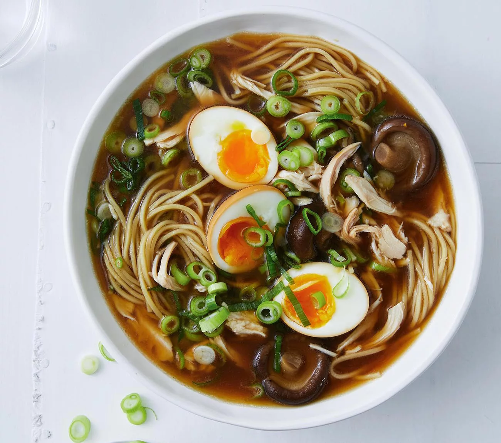

A delicious, winter warming Japanese dish.
- 200g Chicken Breast, chopped
- 1 Carrot, diced
- 200g Ramen Noodles
- 3 Spring Onions, sliced
- Sesame Seeds
- 2 Red Chilis
- 1 Garlic Clove, crushed
- 1 tsp Fresh Grated Ginger
- 1.5 litres of Chicken Stock
- 1 Bok Choi
- 1 tbs Vegetable Oil
- Dark Soy Sauce (for serving)
Steps
- Heat half the oil in a large pan and cook the chopped chicken.
- Once the chicken is golden brown, remove from the pan to a bowl lined with kitchen paper.
- Add the remaning oil, garlic, ginger and most (but not all) of the spring onion and gently cook.
- Once the ingredients in the pan are soft, add the carrot and bok choi and cook for a further few minutes.
- Now pour in the chicken stock and bring to the boil: reducing to a simmer after a few minutes. Season to taste with salt and pepper. Meanwhile, cook the noodles to the packet instructions.
- Once the noodles are cooked add them to the pan along with the cooked chicken and simmer for 1 minute.
- Serve the soup in deep bowls, topping with the left over spring onions, sesame seeds and a splash or two of soy sauce.
Back to top
Home.